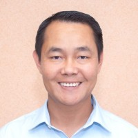

Hau Thang
Summary
I am a result oriented, and hardworking Project Manager, Continuous Improvement Leader, and Team Manager. I strive to achieve business goals and objectives through collaborative teamwork and diligence. I thrive on working to solve challenging tasks, managing complex projects, and leading cross functional teams. I am especially passionate about working in project management and continuous improvement environments.
Education:
- Master of Business Administration (MBA),
Western Governors University,
2016-2017
- Political Science (B.A),
Brigham Young University - Hawaii,
2010-2013
Certification:
- Project Management Professional (PMP),
PMI Institute
2021-2024
- Lean Six Sigma Black Belt,
Strategy & Management Institute,
2019 - No Expiration
Work Expereince:
Sr. Manager, Operations Improvement (Walmart eCommerce, 2022 - Present)
- Led Inbound Performance Improvement (entire workflow).
- Led Network project- “Leader Standard Work” implementation eCommerce Supply Chain.
- Led Network project - Walmart Performance System Programs & Playbooks Standardization.
- Led Network project - A Five-Week Focus Improvement project training across Supply Chain.
- Led a Two-Day Walmart Performance System Immersion Event (38 Managers).
- Launched Fulfillment Center New Employees onboarding & training program SLC, Utah.
Regional Project & Continuous Improvement Leader (Smiths Detection, 2020-2022)
- Led a team of Global Senior Project and Program Managers, composed of 11 members.
- Led relocation of high tech, multi-million-dollar operation from California to Maryland, working with Global Executive Team to ensure Business Strategy and Project Management are aligned, and project budget of 12 million USD is closely monitored.
- Led Smiths Detections North America leadership and executive team through Revision, Risk Assessment, Strategy Planning, and Readiness Exercise of business continuity management and plan.
- Led identification and negotiation of a location to host High Energy X-Ray testing operation to support US Custom and Border Patrol contract.
- Coached and mentored cross functional Lean Six Sigma Green Belt candidates through DMAIC projects for company sponsored certification in collaboration with Oxford University, UK.
2019-2020 Continuous Improvement Specialist II (Reeb Millwork)
2018-2019 Supervisor (Capco LLC. )
2014-2018 Department Manager, Job Coach (Deseret Industries )
Skills
- Project Management
- Process Improvement
- Employees Training
- SharePoint Site Administration
- Cross-Functional Leadership
- Strategy Deployment